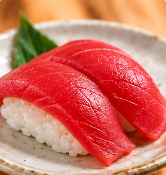

ONOLAB · SUSHI
Sushi flashcards
What is this sushi called?

Tap the photo to reveal the answer
How to play
Look at the photo and guess the name.
Tap the card to see the answer.
Play the Japanese and English audio.
ONOLAB · SUSHI
What is this sushi called?

Tap the photo to reveal the answer
Look at the photo and guess the name.
Tap the card to see the answer.
Play the Japanese and English audio.